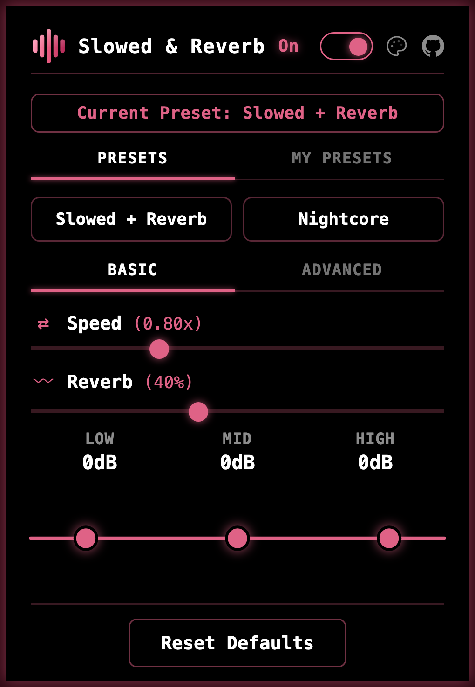
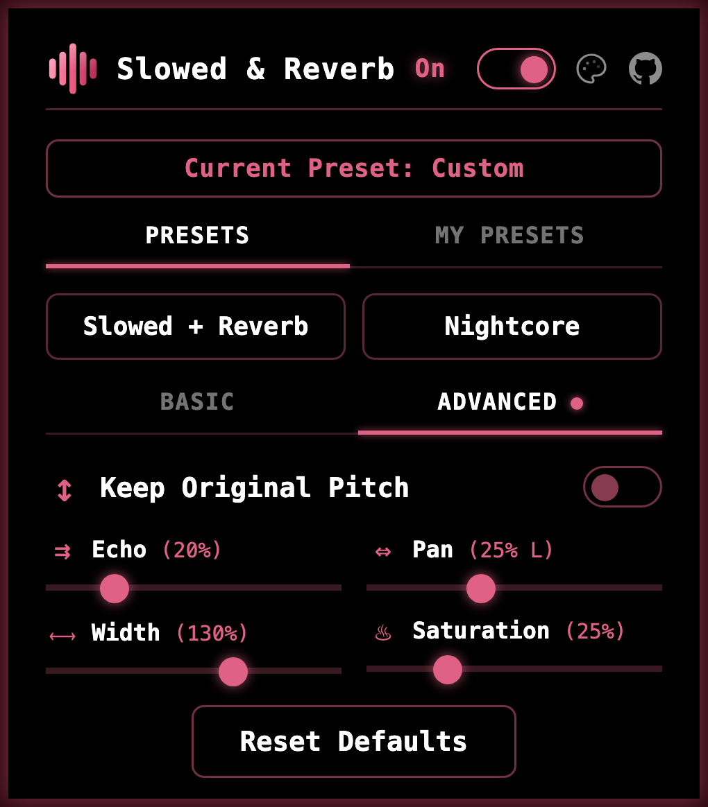
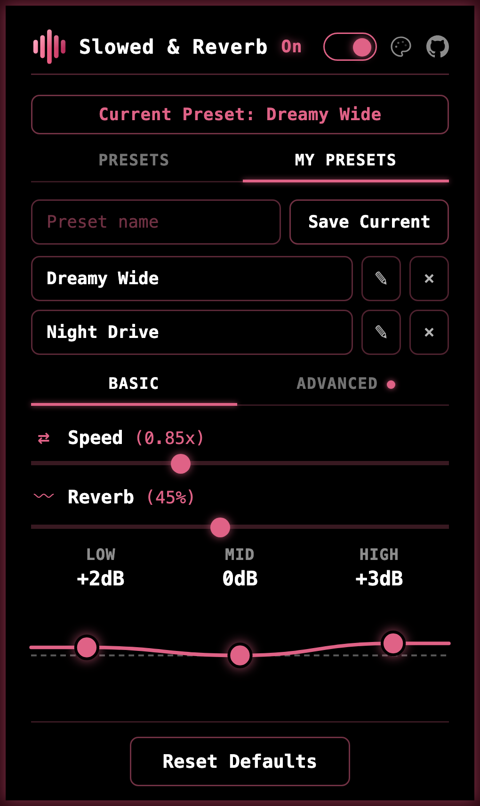
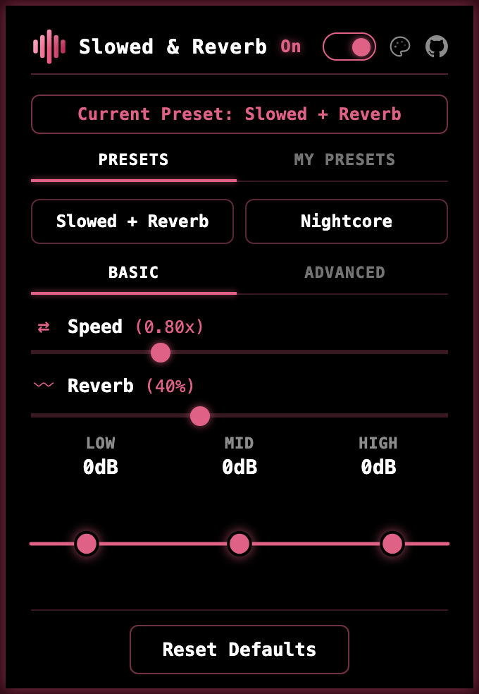
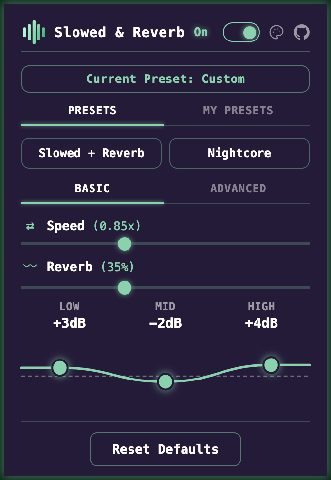
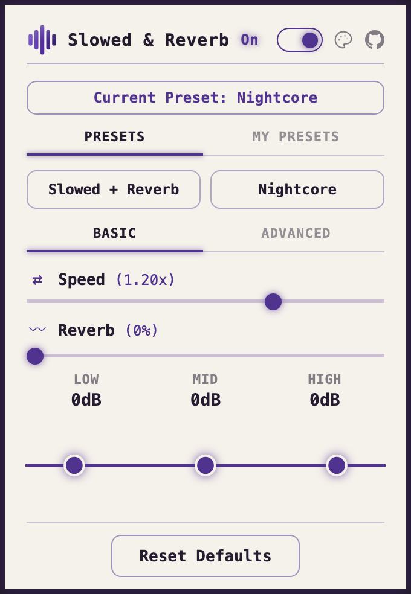
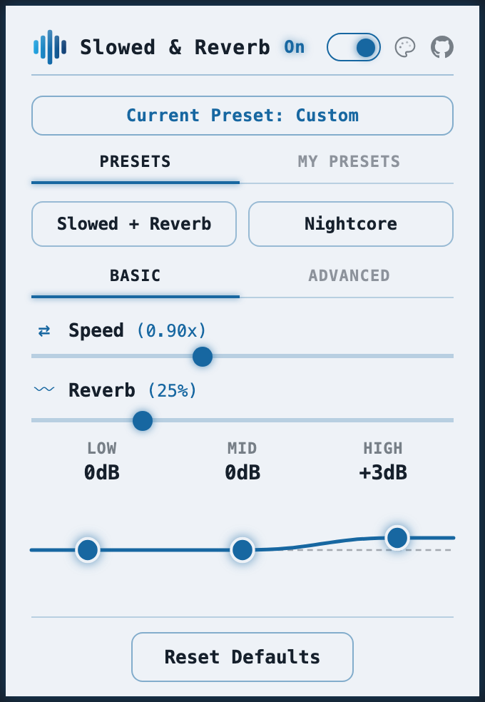

MIT licensed · No account · No telemetry
Every control. No paid tier.
Real-time speed, reverb, EQ, and stereo effects for YouTube™, YouTube Music™, and the Spotify web player. The audio never leaves your machine, and there is nothing to unlock.
Available from the Chrome Web Store and Firefox Add-ons.
Pitch follows speed, like tape. Turn that off and the extension time-stretches instead.
Why it exists
The effect is not a premium feature.
Audio effects for the browser usually arrive half-locked: a couple of sliders to try, the interesting ones waiting behind a purchase. Slowed & Reverb was built the other way round. Everything it can do is available the moment you install it, and it stays that way.
-
Everything unlocked
No trial, no upgrade prompt, no effect saved for a paid version. What you see on install is the whole thing.
-
Nothing tracked
No account, no analytics, no ads. Your music is processed on your own computer and is never uploaded anywhere.
-
Open to read
The complete source is public under the MIT license, so anyone can check what it does or build their own version.
What it looks like
One popup, on the tab you are already playing.

Everything the extension does fits in one panel. Presets sit at the top, speed and reverb under them, and the three bands of EQ at the bottom can be dragged into shape while the track keeps playing.
The switch in the header turns the effect off for that tab, and the palette icon beside it changes the look.
-

Advanced adds echo, panning, stereo width, and saturation, plus the option to slow a track down without the pitch dropping.
-

My Presets saves a mix you like under a name. It is stored on your computer and is one click away the next time.
Four themes
-

Terminal -

Midnight -

Paper -

Frost
Controls
Start quickly. Fine-tune when you want.
| Control | Range |
|---|---|
| Speed | 0.5x – 1.5x the pitch drops with it, the way tape does |
| Reverb | 0 – 100% from a small room to a long, washed-out tail |
| EQ | bass, mid, treble drag the curve, or nudge it with the arrow keys |
| Control | Range |
|---|---|
| Keep original pitch | on / off slow the track down without the pitch dropping |
| Echo | 0 – 100% separate repeats, rather than reverb's wash |
| Pan | left – right move the sound to one side |
| Width | 0 – 200% from mono to wider than your speakers |
| Saturation | 0 – 100% a warm tape and vinyl edge |
Push the sliders as far as you like: a limiter runs quietly underneath to keep extreme settings from distorting. Two presets are built in, your own mixes can be saved and renamed, and keyboard shortcuts are there if you want them, with no keys assigned until you choose them.
Where it works
Works where you already listen.
- YouTube™
- YouTube Music™
- Spotify web player after you allow it
On any other website the extension stays off and changes nothing. More players may be added later.
Good to know
Live streams can use every effect except speed, since the player keeps correcting its own timing. Each tab remembers its own settings, so a newly opened one starts clean.
Runs on desktop Chrome, Edge, Brave, and other Chromium browsers, plus Firefox 142 and later.
Privacy
It asks for access only when you use it.
Installing the extension grants it nothing. Access to a site begins the first time you open the popup there, and Spotify is left alone until you choose to allow it. Your music is processed on your own computer and your presets are saved there too, so neither is ever sent anywhere. Anything you allow can be taken back at any time in your browser's extension settings.
Free, and staying that way.
Install from the Chrome Web Store on Chrome, Edge, Brave, and other Chromium browsers, or from Firefox Add-ons on desktop Firefox 142 and later.